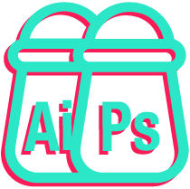

Piacere,
Lorenzo.
"Cerco di rendere i menù kebab più gradevoli (almeno visivamente, il sapore non è cosa mia)"

Branding
Prima l'idea, poi la creatività. Infine Photoshop, Illustrator, InDesign e molti altri programmi a fare la loro parte.

Web
Prima progetto, poi elaboro codice. HTML, CSS e JavaScript quanto basta per farlo funzionare davvero.

Creativity
Ogni lavoro è diverso, ciò che li accomuna è la creatività e lo studio per arrivare a un determinato risultato. Studiosi si diventa, creativi si nasce.
Graphic <web> Designer
Cosa faccio ogni giorno
Mi abbuffo di HTML, CSS, programmi Adobe, caffè e la pazienza dei colleghi. Tra una chiacchiera e una risata realizzo grafiche, DEM, banner, landing page e contenuti social: l'obiettivo è non annoiare mai nessuno (soprattutto me stesso).
Dove sono ora
In We [are] Digital, agenzia di comunicazione, tra grafiche social, DEM e siti. Prima, qualche anno nell'e-commerce e diverse agenzie: ognuna mi ha lasciato qualcosa.
Come lavoro
Essenziale, ma non banale. Chiaro, ma mai scontato. E no, non ho mai usato il Comic Sans (a parte questa volta).
Fuori dal lavoro
Fuori dal lavoro faccio anche il cameriere (6 anni, un ristorante a Como) e il barman per eventi e matrimoni, ai quali capita spesso di fare anche il fotografo. Ho vissuto pure a Londra: uscire dalla comfort zone resta il modo migliore per scoprire chi sei davvero.
Portfolio
Una selezione di progetti tra branding, e-commerce, web design e comunicazione digitale: alcuni reali, alcuni scolastici, altri semplicemente miei.